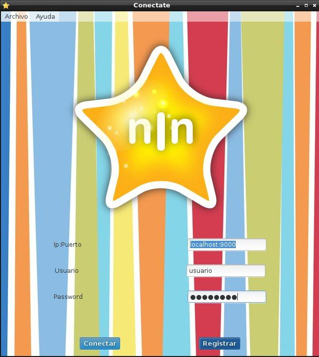
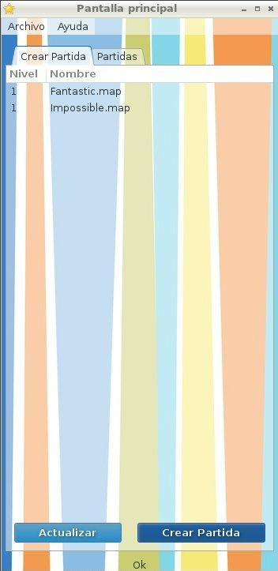
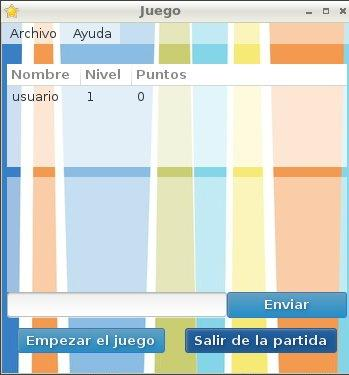
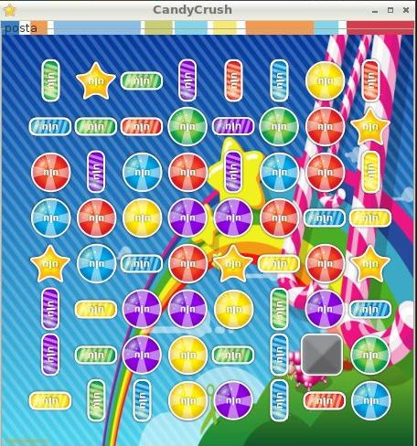

Grupo 8
Grupo 8
Grupo 8
Grupo 8
 Contenidos
Contenidos
El programa tendria que ser corrido en cualquier distribución de Linux sin problemas. Especialmente fue probado en:
Dependiendo de la distribución los paquetes necesarios para correr son: Comunes a todas las distribuciones:
En sistemas Ubuntu o derivados es posible que se nececite agregar el ppa de GNOME 3 Team para satisfacer las depedencias.
Para la instalación basta con compilar el cliente.
$ make clean client
CXX cliente.ipwindow.o
CXX cliente.tablerojuego.o
CXX cliente.caramelo.o
CXX cliente.main_window.o
CXX cliente.sound_player.o
CXX cliente.cliente.o
CXX cliente.game.o
CXX cliente.thread_listener.o
CXX cliente.socket_connect.o
CXX clientemain.o
CXX common.thread.o
CXX common.socket_io.o
CXX common.md5.o
CXX common.user_manager.o
CXX common.logger.o
CXX common.thread_socket.o
CXX common.mutex.o
CXX common.hmac.o
CXX common.socket.o
LD client
$ ./client
El cliente no posee archivos de configuración. La única configuración posible es la elección de ip del servidor y puerto. Esto se configura atraves de la pantalla de login (La descripción de dicha pantalla se desarrolla posteriormente).
Al abrir el juego Ud se encontrara con la siguiente imagen:
Para jugar Ud debe tener tener una cuenta. Si ya esta registrado asegurese de que el boton Active para registrarse este desactivado. Luego coloque el ip:puerto al que quiera conectarse en el casillero Ip:Puerto .
Por ejemplo 127.0.0.1:9000
Luego coloque su nombre de usuario y su contrasena en los campos Usuario y Password respectivamente.
Luego presione Conectar
Si ud no tiene una cuenta, active el boton Active para regisrarse ingrese el nombre de usuario deseado y luego la contrasena que usara para conectarse cada vez que entre al juego en los campos Usuario y Password respectivamente.
Luego, desactivelo y procesa a conectarse con el usuario recientemente creado
Una vez pasada la ventana de conexion Ud se encontrara con la siguiente imagen:
Aquí Ud puede:
Procediendo de la siguiente manera :
Una vez conectado a una partida Ud es redirigido a una sala con el siguiente formato :
 En esta instancia Ud ya esta conectado y esperando que empiece la partida. Aquí puede chatear con los demas jugadores conectado a esta misma partida, en ningún caso Ud podrá ver la identidad de quién escribe. Sólo el creador de la partida puede dar comienzo a la misma mediante el boton de Empezar el juego .
En caso de querer abandonar la partida presione Salir de la partida .
Aclaración: Si el creador de la partida abandona la partida, cualquiera de los jugadores puede dar comienzo.
Finalmente, cuando el creador de la partida empieza el juego, a todos los jugadores conectados a la partida se les muestra el tablero listo para jugar.
El objetivo principal del juego es lograr ciertos patrones de colores y tipos de productos en celdas adyacentes. Dichas configuraciones se consiguen mediante el intercambio de los productos contenidos en celdas consecutivas. Los intercambios ocurren siempre de a pares de celdas donde el producto de la primera pasa a la segunda celda y viceversa. Las configuraciones o patrones están asociadas con ciertos puntajes y consecuencias
La GoldenStar sólo se activará mediante una acción directa del jugador, intentando intercambiarlo con un producto adyacente. El resultado de esta acción dependerá de cual sea este producto:
En todos estos casos se darán 40 puntos por cada uno de los productos eliminados. La eliminación de productos dejará celdas vacías en el tablero, que serán llenadas mediante la caída de los productos presentes en las celdas superiores. Las celdas situadas “arriba del borde superior” se considerarán rellenas con productos aleatorios (sin considerar si estas combinaciones son estables o no). En caso de producirse una nueva configuración especial, el puntaje que corresponda será multiplicado por dos. El proceso se repite hasta que se llegue a una configuración estable y, mientras este proceso se repita, los jugadores no podrán realizar acciones.
El juego terminará cuando no haya más acciones posibles (todos pierden) o cuando uno de los jugadores llegue al puntaje especificado (ese jugador pasará de nivel y los otros tendrán que reintentarlo).